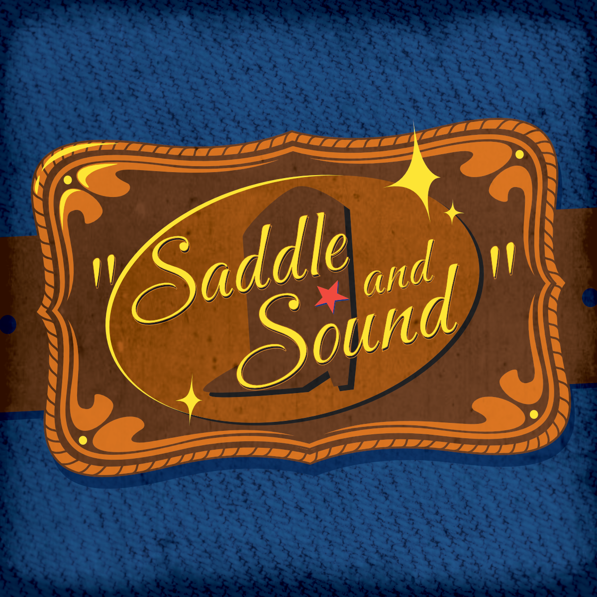
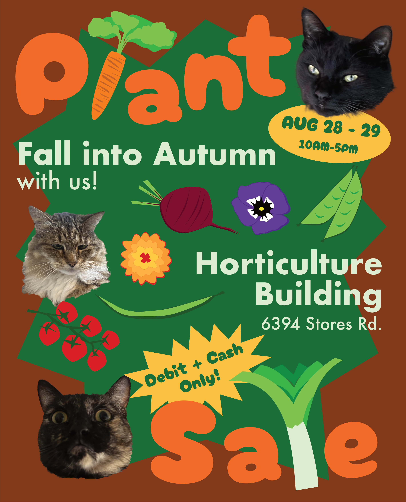

Projects

Logo for a country music podcast. Yeehaw! (Click for more)

Poster for UBC greenhouse fall plant sale (Click for more)

Post, banner, and story graphic announcing CiTR/Discorder AGM (Click for more)

4 posters to be put up around UBC campus encouraging viewers to listen to CiTR radio (Click for more)

Illustrations for Vancouver-based punk/screamo band Emma Goldman (Click for more)

Illustrations for Discorder Magazine accompanying feature about Shindig Music Festival (Click for more)

Mixed media collage for Discorder Magazine calendar

Logo Design for podcast "What's in the Hat?"